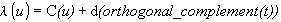

IfcOffsetCurve2D
Definition from ISO/CD 10303-42:1992: An offset curve 2d
(IfcOffsetCurve2d) is a curve at a constant distance from a basis curve in
two-dimensional space. This entity defines a simple plane-offset curve by
offsetting by distance along the normal to basis curve in the plane of basis
curve. The underlying curve shall have a well-defined tangent direction at
every point. In the case of a composite curve, the transition code between each
segment shall be cont same gradient or cont same gradient same curvature.
NOTE: The offset curve 2d may differ in nature from
the basis curve; the offset of a non self- intersecting curve can be
self-intersecting. Care should be taken to ensure that the offset to a
continuous curve does not become discontinuous.
The offset curve 2d takes its parametrisation from the basis curve. The
offset curve 2d is parametrised as

where T is the unit tangent vector to the basis curve
C(u) at parameter value u, and d is distance. The
underlying curve shall be two-dimensional.
NOTE Corresponding STEP entity:
offset_curve_2d, Please refer to ISO/IS 10303-42:1994, p.65 for the final
definition of the formal standard.
HISTORY New entity in IFC Release 2.x
EXPRESS specification:
|
|
|
|
|
|
| WR1
|
:
|
BasisCurve.Dim = 2;
|
|
|
|
Attribute definitions:
| BasisCurve
|
:
|
The curve that is being offset.
|
| Distance
|
:
|
The distance of the offset curve from the basis curve. distance may be positive, negative or zero. A
positive value of distance defnes an offset in the direction which is normal to the curve in the sense
of an anti-clockwise rotation through 90 degrees from the tangent vector T at the given point. (This
is in the direction of orthogonal complement(T).)
|
| SelfIntersect
|
:
|
An indication of whether the offset curve self-intersects; this is for information only.
|
Formal Propositions:
| WR1
|
:
|
The underlying curve shall be defned in two-dimensional space.
|
Inheritance graph